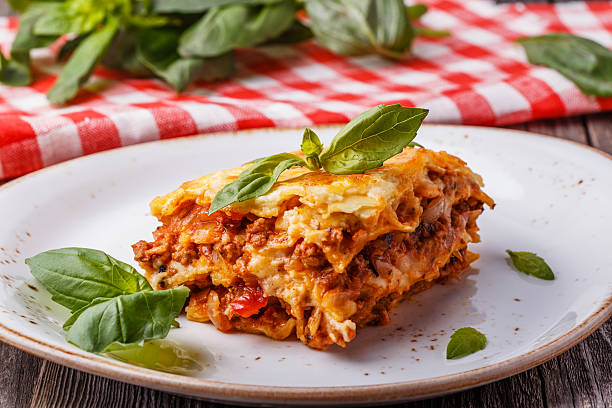

Back to home
Simple Meat Lasagna

Ingredients
- 12 lasagna noodles
- 1 pound lean ground beef
- 2 cloves garlic, chopped
- 1 teaspoon dried oregano, or to taste
- 1/2 teaspoon garlic powder
- salt and ground black pepper to taste
- 1 (16 ounce) package ricotta cheese
- 1/2 cup shredded Parmesan cheese
- 2 eggs
- 4 1/2 cups tomato-basil pasta sauce
- 2 cups shredded mozzarella cheese
Directions
- Preheat the oven to 350 degrees F (175 degrees C)
- Bring a large pot of lightly salted water to a boil. Add
lasagna noodles and cook for 10 minutes or until al dente;
drain.
- Meanwhile, place ground beef, garlic, oregano, garlic
powder, salt, and black pepper in a large skillet over
medium heat; cook and stir until beef is crumbly and
evenly browned, about 10 minutes.
- Mix ricotta cheese, Parmesan cheese, and eggs together
in a large bowl until thoroughly combined.
- Lay 4 noodles side by side on the bottom of a 9x13-inch
baking pan; top with a layer of prepared tomato-basil sauce,
a layer of ground beef mixture, and a layer of ricotta
cheese mixture. Repeat layers twice more, ending with a
layer of sauce; sprinkle mozzarella cheese on top. Cover
the dish with aluminum foil.
- Bake in the preheated oven until the lasagna is bubbling
and the cheese has melted, about 30 minutes. Remove foil
and bake until cheese has begun to brown, about 10 more
minutes. Allow to stand at least 10 minutes before
serving.
Back to home